Assignment 6: Molding and Casting
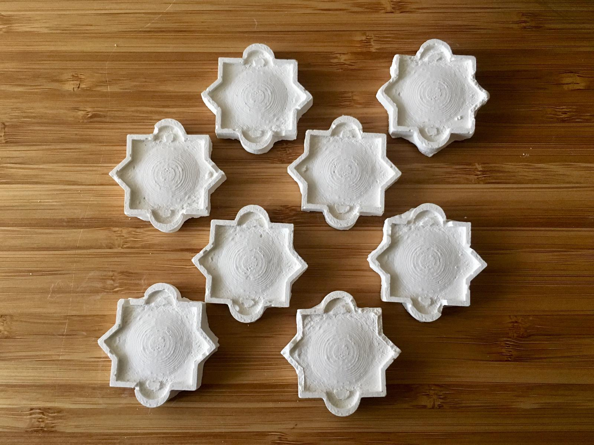
The final plaster-cast tiles.
Overview
This week's assignment was a multi-step process. First, we needed to design a hard mold for our silicone mold, which would be either 3D printed or CNC milled. Then, using our new silicone mold, we would then cast plaster pieces.
Tools and Materials
- Machinable wax or 3D Filament
- Oomoo 1:1 Ratio Silicone Mold
- Plaster of Paris
- Disposable cups, spoons, etc.
Software
- Grasshopper/Rhino
- Fusion 360 and Bantam Tools or Dremel 3D Slicer
Ideation
As always, I started by thinking about what form my project would take. Technically, we didn't need to design anything for this assignment, but I've been drawn to grasshopper designs lately and wanted to get a bit more practice.
I decided I wanted to do some sort of tile shape, inspired by tilework I've seen in Egypt and the UAE. I knew nothing about the history of these tiles, but I knew they were normally symmetric and ornately detailed. A bit of digging taught me that one implementation is called "zellige." These tiles are generally abstract and show some form of tessellation to avoid the depiction of living things. (More references included at the end!)
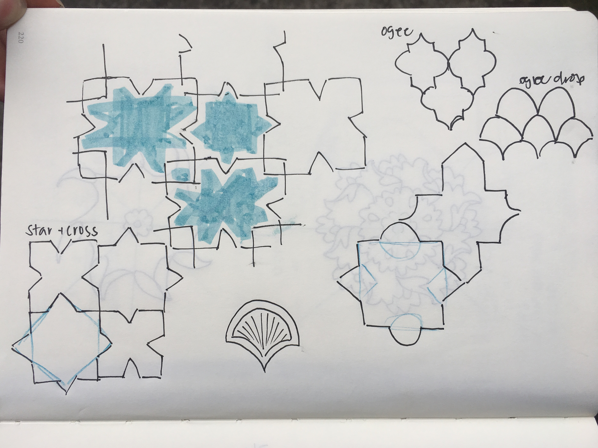
Sketches of the shapes of various tiles.
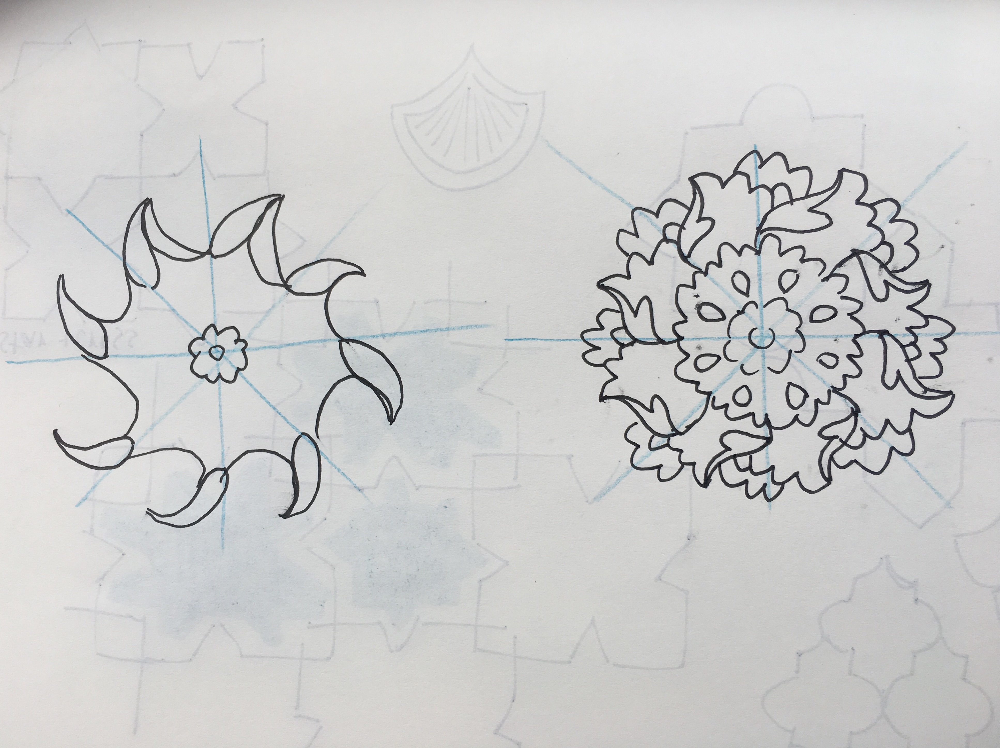
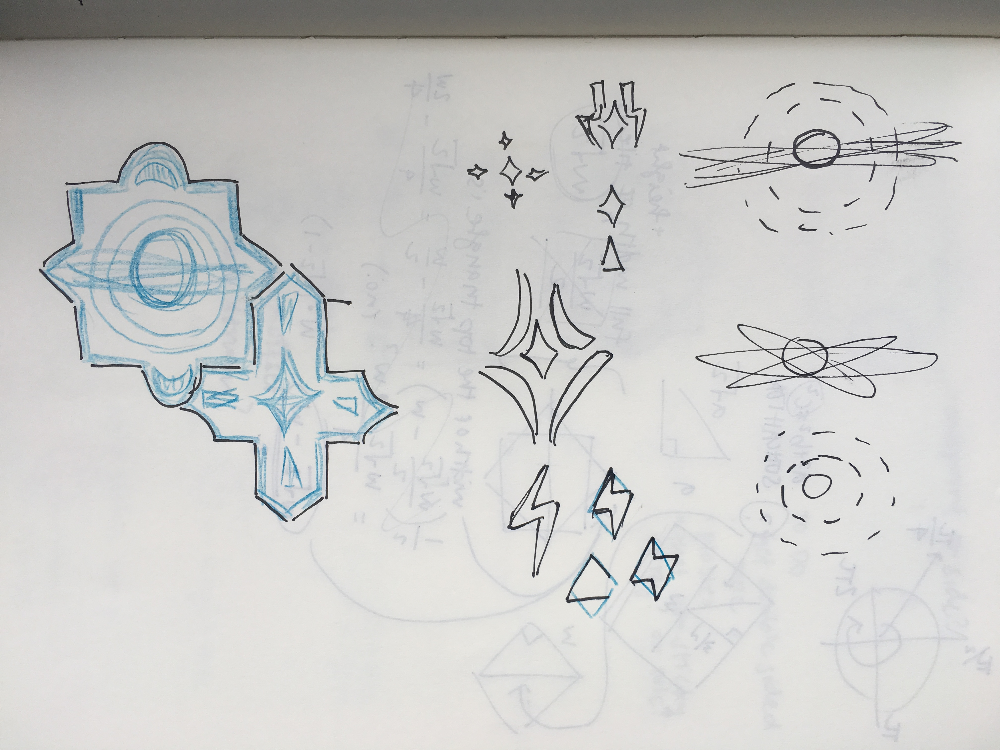
Ideas for details to add onto the tile.
From a practical standpoint, I also wanted to stick with something simple since I was unfamiliar with molding and casting with plaster. An interesting but simple tile shape would allow me to practice the process without too much pain, and I could add as much or as little detail as I needed to.
Process
A False Start
In an attempt to stay ahead of the game, I ordered some machinable wax a couple weeks ago. Thanks to Leo's comment on slack, I realized that this size was too large. I made a futile attempt to cut the wax on my own, without any luck. 0/10, would not recommend. I ended up rushing to Fluke on a Friday (thanks to a heads up from Kimberly) to buy the other size wax.
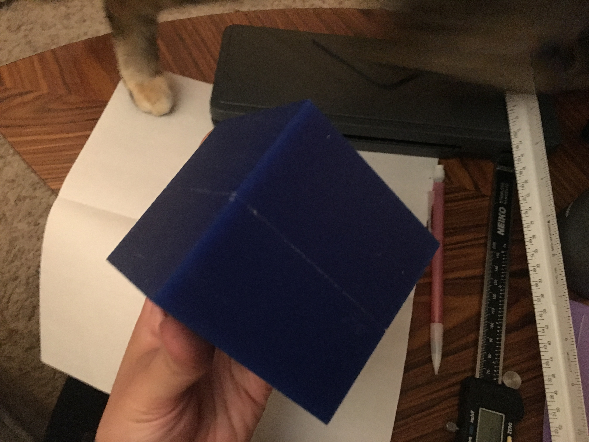
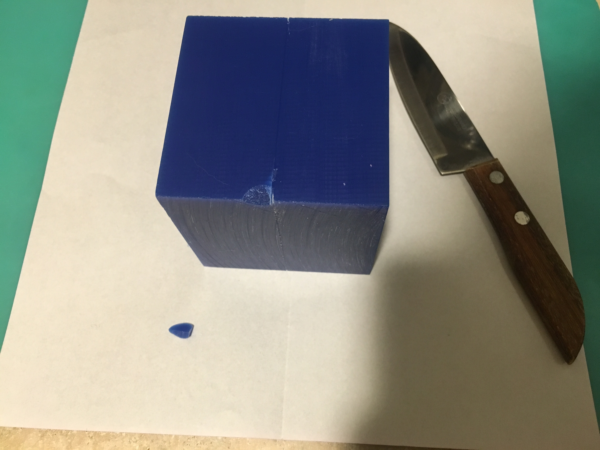
The 3x3 inch block is too large for the Bantam mill.
Designing the Tile
As stated earlier, the design wasn't central to this assignment, but I wanted to gain some experience with Grasshopper and Rhino so I decided to design it myself anyway. The geometric and mathematical form of the tile made it a natural fit for Grasshopper, though this tile design in particular was simple enough to be designed with Onshape as well.
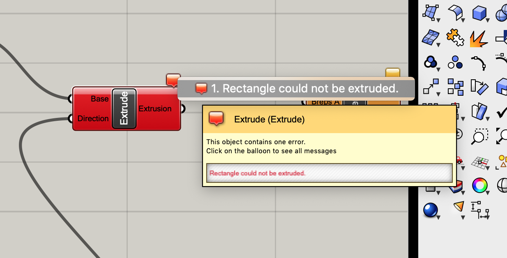
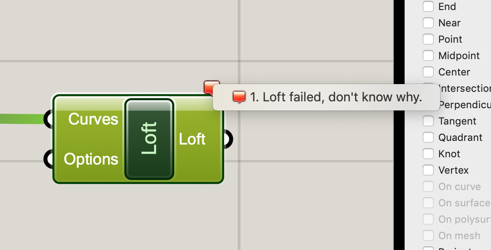
Someday, I will figure out how to understand Grasshopper errors...
Designing with Grasshopper was tricky, as usual. It took me a bit of trial and error to design the first tile, but I was quickly able to "cut out" the second tile by tiling the first tile, then using a boolean to create the second tile.
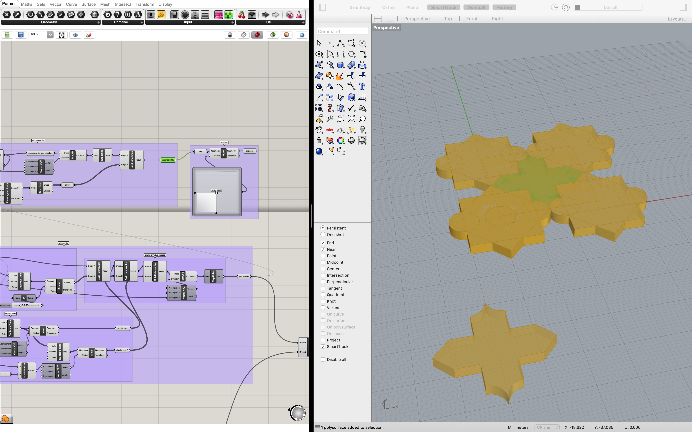
Tiles!
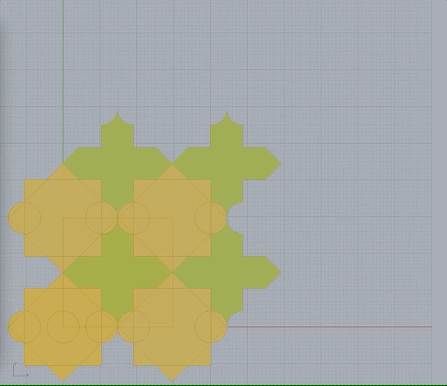
Generating more tiles with a slider!.
I wanted to add a bit of detail to my base tile shape, since that would be the real test of the plaster. I had originally intended to add some planetary/space-y motifs onto my tile, including a "planet" with some surface texture that would show up like a topological map. I never got that far, but a girl can dream... I ended up keeping the details fairly simple, since I ended up spending a bit too much time here and wanted to move on to the actual milling, molding, and castingI also decided here that I would only cast the first tile for now.
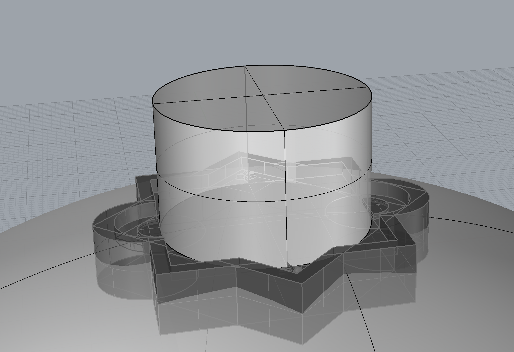
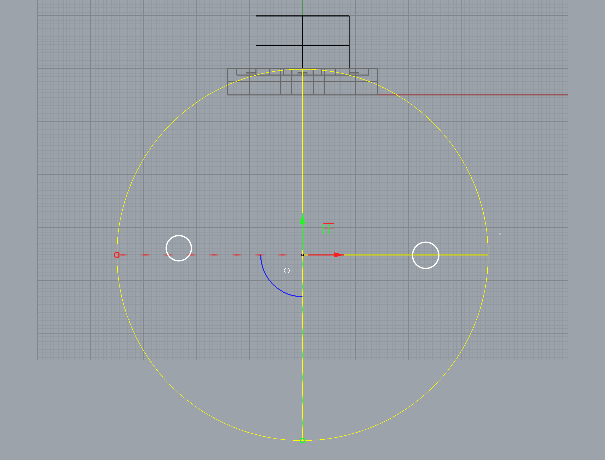
Creating the curve in my design. #iseefaces
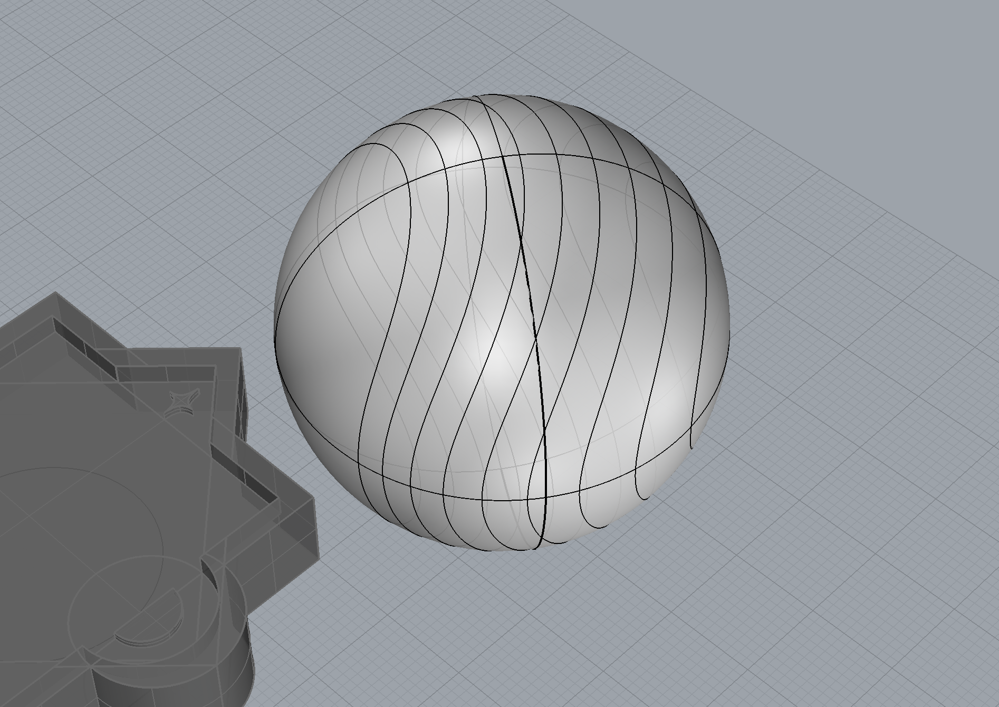
Trying to create a wavy design on the "planet." Spoiler alert: I couldn't get it to work.
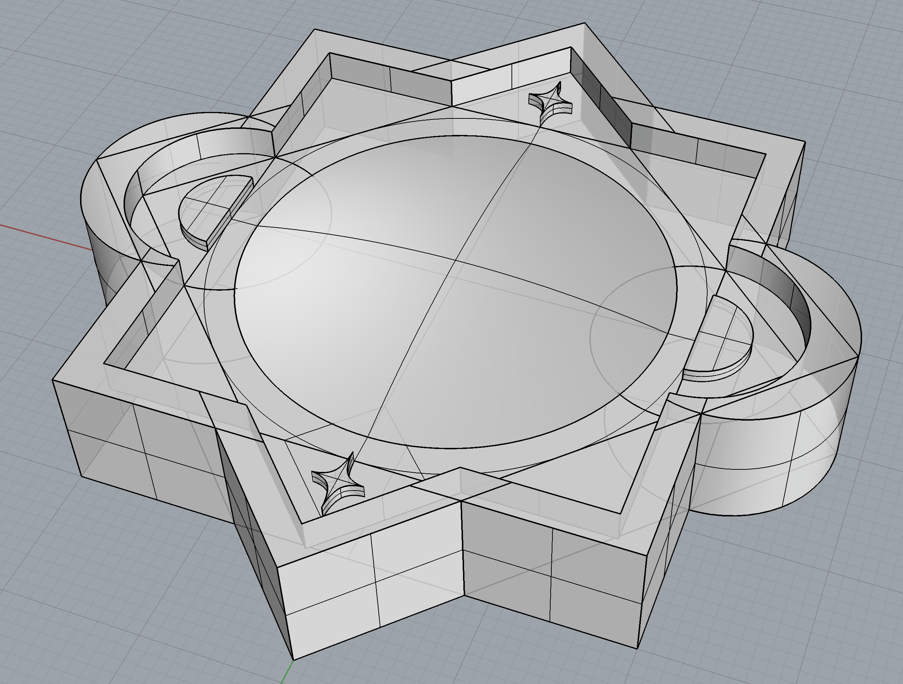
Final(ish) modeled piece to cast.
Since I was already using Grasshopper, I was able to define the wax block and create a model of the mold to be milled as well. This process certainly was not without pain, as Grasshopper crashed on me a couple times and I lost a couple hours of work at one point. However, I am glad I used Grasshopper because it made it easy for me to move things around to see how they fit, and also to build multiple versions of the molds in case something goes wrong. I ended up baking multiple versions of my mold: one with both tiles and two more with one tile each.
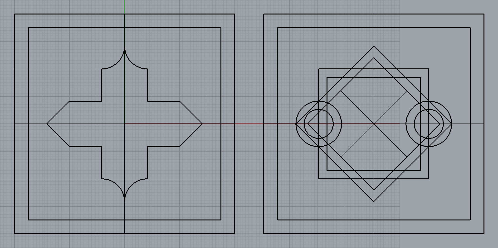
Top view of the mold meshes.
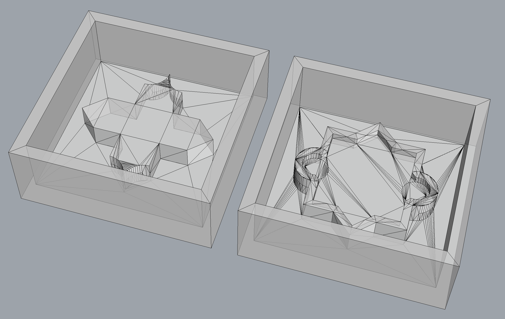
Meshes of the single molds.
Exporting from CAD to CAM in Fusion 360
The next step was to import our design into Fusion 360 in order to build the toolpath for the Bantam mill. I followed the steps outlined in class and ran into some hiccups with scaling issues and general unfamiliarity with Fusion 360, but I was eventually able to get a reasonable-looking toolpath with which I exported a gcode file from.
Importing into Fusion 360.
Toolpath created and ready to post process!

A virtual preview of the toolpath.
Exporting from Fusion 360 to Bantam Tools
Exporting the gcode from Fusion 360 and importing into Bantam tools was fairly painless, though my toolpath did get place way outside of the machine. I imagine this had something to do with the scaling issues in Fusion 360, though it wasn't difficult to fix in Bantam.
Somehow, the toolpath got placed way outside of the box.
Moved the toolpath to the correct location and things are looking reasonable.
CNC Milling with the Bantam
When I got to the MILL, I set up my wax with some double sided tape at the bottom and loaded my Bantam set up. Now, I am ready to cut! *foreshadowing intensifies.*
Ready to cut!!!
Ha ha haaaa, just kidding. I somehow missed the memo that this wax was still too large for the Bantam, and by just a couple millimeters! I found some orphaned sandpaper and tried to sand down my block of wax enough to fit in the Bantam, but was unsuccessful.
Just kidding.
An unsuccessful attempt to sand down the block of wax to fit in the Bantam...
Pivot to 3D Printing
At this point, Christa and Nitya came over and suggested 3D printing. Unfortunately, I had really wanted to gain some practice using the CNC mill and some of the details on my piece were designed with the CNC mill in mind (i.e., the little stars at the top and bottom), but I didn't have a way to quickly move forward with the CNC mill at the moment. I was able to edit a few parameters in Grasshopper in order to make the walls of my mold a bit thinner, and then export again as a stupid triangle list to import into Dremel tools.
The first design for a 3D printed mold.
I stopped the first print after about 20 minutes to ensure that the layers were sticking together properly. It seemed like it did, but about an hour into the print, I realized that the layers were definitely not sticking. Per Irina's suggestions, I decided not to print the box, but instead print just the tile which I would later put in a cup at home. I also scaled down the print and raised the temperature of the nozzle to 235 deg C.
A partial print to test if the filament layers are sticking together properly.
What a flake. :'(
Scaled down 3D print.
Creating a mold with Oomoo
Since my 3D printed piece was a bit flakey, I slathered it in vaseline to fill the gaps and and coated it in bit of dry shampoo to ensure it doesn't bond to the silicone. I glued the piece down to the bottom of a paper cup with a glue stick, mixed the Oomoo, and slowly poured it in. About 10 minutes after pouring in the Oomoo, I realized I did not glue the piece down enough, as the 3D printed piece had floated to the top. I flipped over the 3d-printed piece and let it float face-down, thinking that I would need to redo it again, but I'll let this sit. At the very least, I got some experience using the Oomoo.
Who wore it better? A partly cloudly sunset, or partially mixed Oomoo?
A successful Oomoo mold!
But surprise! My Oomoo mold actually came out okay! It picked up on all the imperfections of my 3D printed mold, but it's usable!
Casting with Plaster
I bought Plaster of Paris since that was the type of plaster I heard about most often. I eyeballed the ratio according to the package, and went through a couple iterations before I was able to find the right technique. My first couple of casts were far too thick, and I had way overfilled the mold with the intention of sanding down the back. By the ~7th iteration, I found that a "heavy cream" texture what what you wanted for the plaster (kudos to Dawn for that descriptor).
Casting with the mold.
WARNING: Apparently, you're not supposed to do this since plaster could burn you! I washed it off immediately after this photo. It's so creamy though!
While the Plaster of Paris supposedly takes a full 24 hours to cure, it hardened enough for me to remove in about 30 minutes, which meant I was able to cast all my pieces in a night and allow them all to sit for another day to cure. Apparently ,there's an exothermic reaction that occurs, though I never felt any heat, which was slightly disappointing. I wanted to see some chemistry!
A couple of tile casts!
Results
This project had a bunch of false starts and surprises, but the end result ended up okay! The plaster definitely picked up on all the imperfections of my flakey 3D print, but at least I was able to gain some experience working with plaster. Using a parametric design made it easy to quickly pivot from CNC milling to 3D printing, though I still hope to get some experience using the CNC mill later on. Working with the actual molding and casting wasn't as painful as I expected it to be!
A close-up of one of the better tiles.
My cat being a cat and trying to knock over the final pieces.
The final cast pieces along with the mold and 3d printed piece.
Source Files
- tile.gh - Grasshopper definition for the tile designs.
- tile-box.gh - Grasshopper definition for the mold of the molds.
- tile.3dm - Rhino file with tile and mold models.
- tile-box-combined.gcode - Unused gcode with the CNC toolpath.
- tile-box-v3.btm - Unused Bantam setup
- tile-a-scaled-20190519.stl - Stupid triangle list for the 3D print (further scaled by 75% in the final version.
- Folder with all related files.
Acknowledgments
A huge thanks to Leo, Kimberly, Dawn, Christa, Nitya, and Irina for help and support on this project.